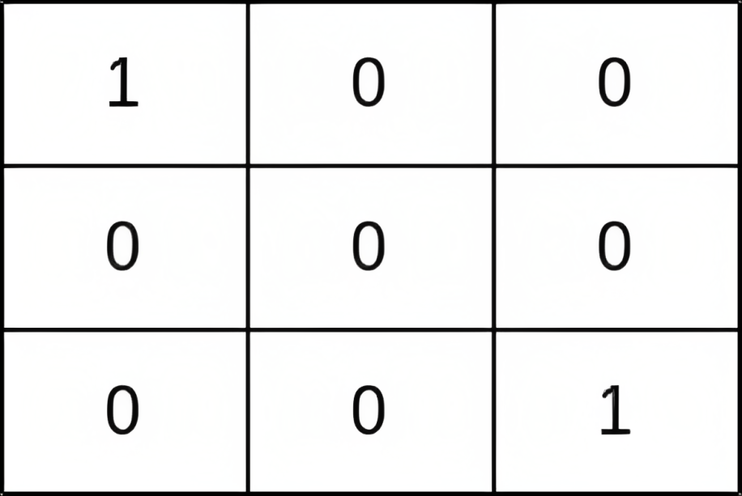
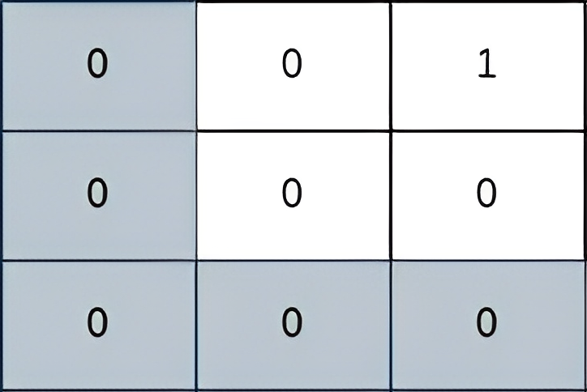
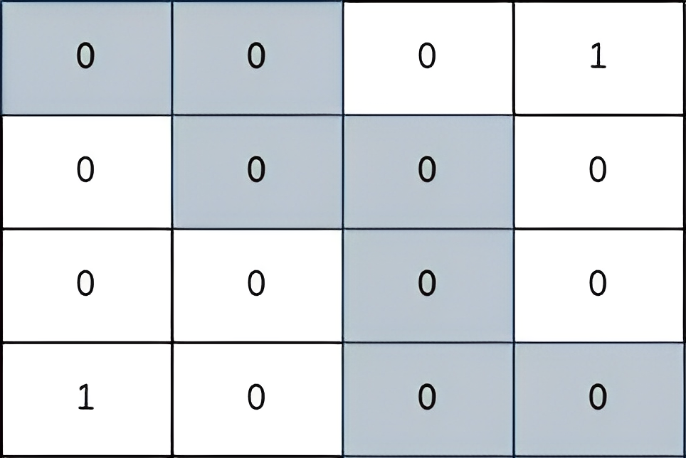

| Category | Difficulty | Likes | Dislikes |
|---|---|---|---|
| Algorithms | Medium | 1795 | 318 |
array | binary-search | breadth-first-search | union-find | heap-priority-queue | matrix
google | imc | amazon
You are given a 0-indexed 2D matrix grid of size n x n, where (r, c) represents:
grid[r][c] = 1grid[r][c] = 0You are initially positioned at cell (0, 0). In one move, you can move to any adjacent cell in the grid, including cells containing thieves.
The safeness factor of a path on the grid is defined as the minimum manhattan distance from any cell in the path to any thief in the grid.
Return the maximum safeness factor of all paths leading to cell (n - 1, n - 1).
An adjacent cell of cell (r, c), is one of the cells (r, c + 1), (r, c - 1), (r + 1, c) and (r - 1, c) if it exists.
The Manhattan distance between two cells (a, b) and (x, y) is equal to |a - x| + |b - y|, where |val| denotes the absolute value of val.
Example 1:

Input: grid = [[1,0,0],[0,0,0],[0,0,1]]
Output: 0
Explanation: All paths from (0, 0) to (n - 1, n - 1) go through the thieves in cells (0, 0) and (n - 1, n - 1).Example 2:

Input: grid = [[0,0,1],[0,0,0],[0,0,0]]
Output: 2
Explanation: The path depicted in the picture above has a safeness factor of 2 since:
- The closest cell of the path to the thief at cell (0, 2) is cell (0, 0). The distance between them is | 0 - 0 | + | 0 - 2 | = 2.
It can be shown that there are no other paths with a higher safeness factor.Example 3:

Input: grid = [[0,0,0,1],[0,0,0,0],[0,0,0,0],[1,0,0,0]]
Output: 2
Explanation: The path depicted in the picture above has a safeness factor of 2 since:
- The closest cell of the path to the thief at cell (0, 3) is cell (1, 2). The distance between them is | 0 - 1 | + | 3 - 2 | = 2.
- The closest cell of the path to the thief at cell (3, 0) is cell (3, 2). The distance between them is | 3 - 3 | + | 0 - 2 | = 2.
It can be shown that there are no other paths with a higher safeness factor.
Constraints:
1 <= grid.length == n <= 400grid[i].length == ngrid[i][j] is either 0 or 1.grid.